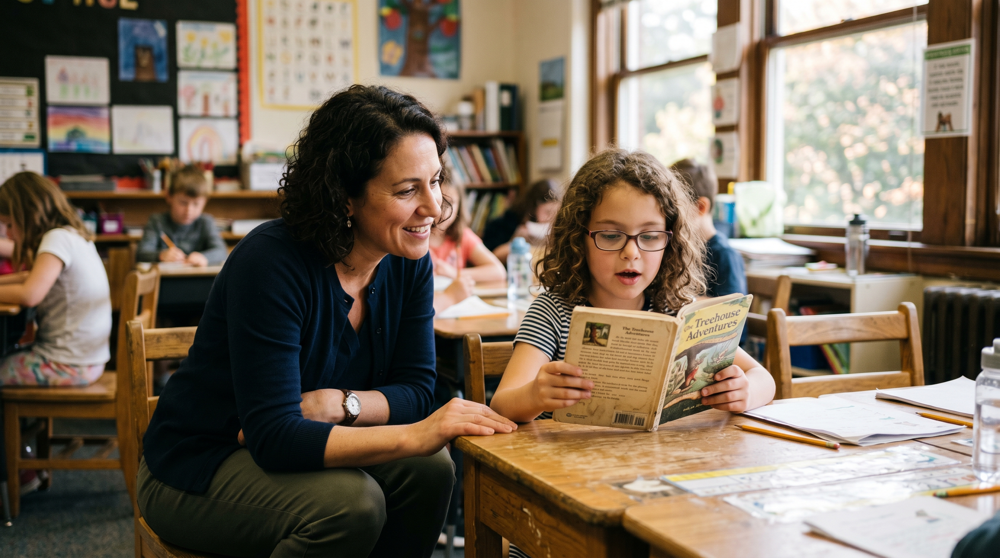
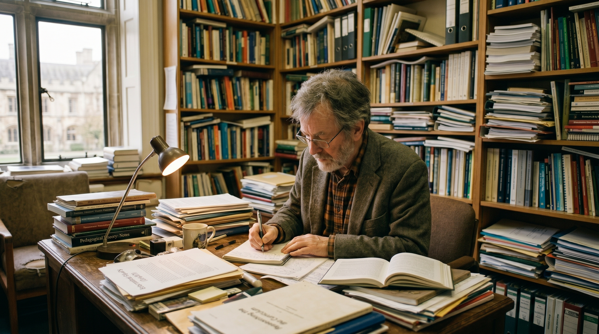

Project Context
§ 01The Challenge / Hypothesis
Reading fluency — the ability to read accurately, quickly, and with expression — is the bridge between decoding individual words and actually comprehending meaning. It is one of the most important and least-studied aspects of literacy development. For decades, fluency was overlooked in favor of phonics and comprehension. Rasinski asked what was being lost in the middle.
The Solution / Innovation
Rasinski's four decades of research produced the most widely used reading fluency frameworks in American education. His work is in millions of classrooms, shaping how teachers approach the quietest part of reading instruction. This is a legacy story — not a discovery story. The visual challenge is representing influence at scale: how do you photograph an idea that lives in the heads of children across the country? The answer is to photograph the human source of it, and the moment of transmission.
Scientific Workflow
§ 02Classroom Observation
Rasinski's methods in use in an actual classroom setting — a teacher using fluency practice techniques with students.
Student Reading Assessment
A student reading aloud — the fundamental act his research is designed to support and improve.
Writing and Research
Rasinski at his desk or in his office — the act of translating decades of observation into the texts that reach millions of classrooms.
Teaching and Training
Rasinski teaching — in the university classroom, in professional development settings, in the transmission of his methods to the next generation of educators.
---
Shot Concepts
§ 03Rasinski in a classroom — either his university teaching space or a K-12 classroom with students reading. Warm, human, direct eye contact. The books, the space, the students (if present and permitted) fill the environment. This is a portrait of a man whose work has outlasted any single study — the portrait of influence.
- Warm, soft light — this is a warmth-forward story, not a clinical one
- If students are present: get releases, shoot from angles that respect their privacy, use them as environmental elements rather than subjects
- If without students: a classroom of empty desks reads as equally powerful
- Horizontal for editorial spread; vertical for profile
Technical Notes
Setup Diagram
softbox (warm, camera-left)
+ window natural supplement
[Rasinski]
direct gaze [classroom: desks, books, boards]
camera, 85mm

AI Visualization Prompt
A child or student reading aloud — the fundamental act. A teacher or Rasinski listening, leaning in slightly. This is the image of what the research is for. Simple, warm, human.
- If shooting in a real classroom, confirm all releases and permissions first
- The reader's face should be visible — not obscured by the book
- The listener's attention is the composition anchor
- Window light or soft available light — don't overlight this scene
- Horizontal preferred — the connection between reader and listener needs space
Technical Notes
Setup Diagram
[window light, soft]
[student: reading aloud]
[teacher / Rasinski: listening]
camera, 85–135mm
from distance

AI Visualization Prompt
Rasinski in his office — surrounded by four decades of books, manuscripts, correspondence, and the accumulated material of a life spent thinking about how people read. He doesn't need to look at camera. This is the quiet image of legacy.
- His office is the environment — don't clean it. The organized accumulation is the story.
- Warm, low key light to create depth and shadow
- He can be reading, writing, looking out a window — not posed for the camera
- This is a contemplative image, not a promotional one
Technical Notes
Setup Diagram
[office: books, stacked papers, manuscripts]
[Rasinski]
reading or writing
not posed [window, soft natural]
camera, 50–85mm

AI Visualization Prompt
One of Rasinski's books — its cover visible — open on a classroom desk. Or a teacher's copy with handwritten annotations in the margins. The object of influence in its natural habitat.
- The book should be well-used, not pristine — dog-eared, annotated, real
- Shoot on a classroom desk with ambient classroom light
- A teacher's hand turning a page or pointing to a passage adds humanity
- This is a companion image that runs as a section break in editorial layout
Technical Notes
Setup Diagram
[window/classroom light, soft]
[Rasinski's book: open, annotated]
teacher's hand in frame
camera, 50mm, slight angle